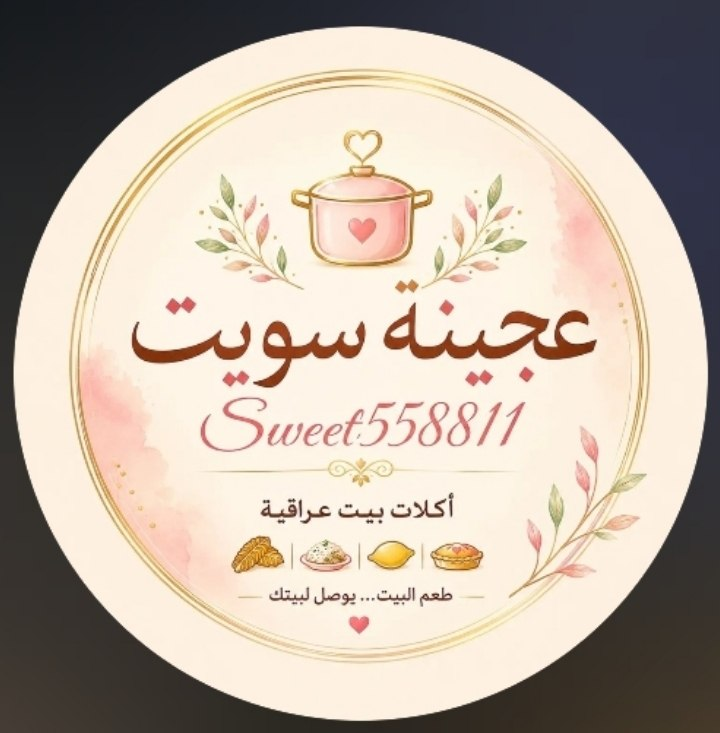
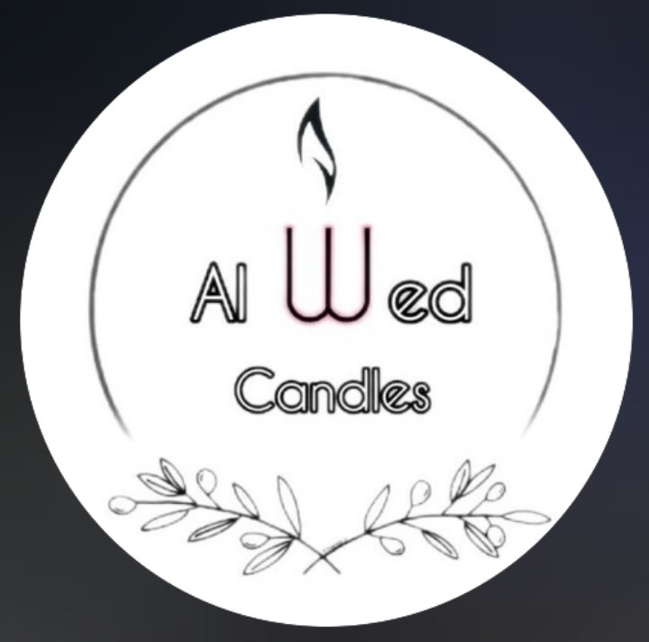

بازار ميسان الثقافي · العمارة، العراق
خلّ نمشي بين
حكايات ميسان.
من كتاب تختاره، إلى موهبة تلتقي بيها.
هنا نكتشف ميسان بعيون أهلها.


تلگه ناسها.
أفكار من أهلنا.
تستاهل تعرفها.
تصفّح المواهب والمكتبات والأكلات والأعمال اليدوية، وتعرّف على أصحابها،
واكتشف شغفهم عن قرب.

أكلات وحلويات↗عجينة سويت
05حلويات ومخبوزات · @sweet558811

أعمال يدوية↗Alwed Candles
06شموع وتفاصيل منزلية · @alwed_candles
كل اسم هنا، جزء من حكاية البازار. ✦
لحظات تنشاف.
وفرحة تنحس.
فرشاة، ألوان، وابتسامة. هذه التفاصيل هي روح البازار.
كل صورة هنا، بيها ناس وحكاية.
المدينة مكاننا.
واللمة بوجودكم.
تتنقّل فعاليات البازار بين مساحات ميسان.
تعرّف على أماكن احتضنت لقاءاتنا.
كورنيش دجلة
العمارة · من محطات البازار
حديقة حي المعلمين القديم
العمارة
حديقة تاج الدين
العمارة، الجمعيات
منتجع عروس البحر
العمارة
الجامعات والكليات
مساحات جديدة للقاء
يمكن ببالك
هالأسئلة.
شنو أگدر ألقى في البازار؟ +
مكتبات وفنون ورسم ومشاريع محلية، وتجارب تجمع أصحاب المواهب بالزوّار. تختلف المشاركات والأنشطة من فعالية لأخرى.
وين وشنو موعد الفعالية الجاية؟ +
تختلف المواعيد والأماكن من فعالية لأخرى. تابع إعلانات البازار على إنستغرام ↗ لمعرفة الموعد والمكان قبل الزيارة.
شلون أتواصل ويا المشاريع؟ +
افتح بطاقة المشروع للاطلاع على تفاصيله. ستجد وسائل التواصل المتاحة لكل مشروع داخل بطاقته، ومنها حساب مكتبة تسواهن ورقمها.
هل الأنشطة مناسبة للأطفال؟ +
من تجارب البازار الرسم على وجوه الأطفال مع حيدر الرسام. راجع إعلان كل فعالية لمعرفة الأنشطة وشروط الحضور الخاصة بها.